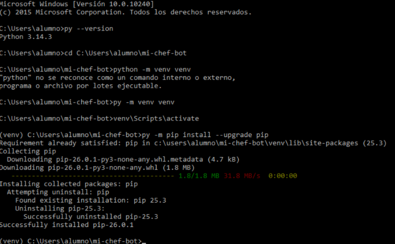
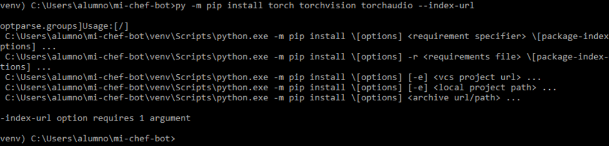

Creación de la carpeta
Tenemos que crear la carpeta
Terminal
Tenemos que crear la carpeta
Nos metemos dentro de michef:


Después de instalar todo, tenemos que crear el dataset. Esto es lo que le tenemos que poner:
Esto va a producir un modelo fusionado:
Con esto, lo que hacemos es reducirle el tamaño:
Tenemos que probar el modelo, para ello tenemos que seguir el siguiente procedimiento: